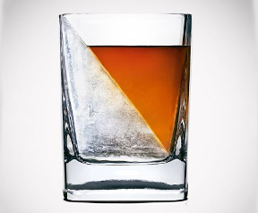
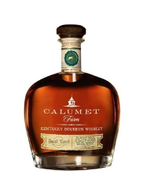
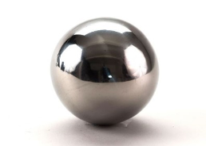
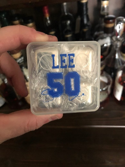
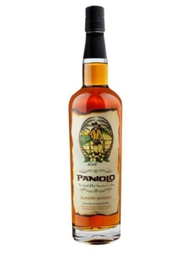
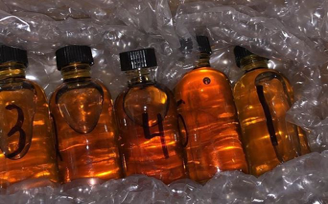
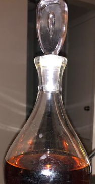
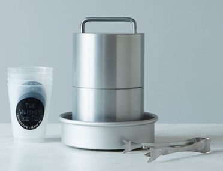
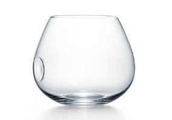

Top 5/Bottom 5 Bourbon Gifts I've received
Inspired by Craig Miller, I wanted to share with you a compilation of some of the great (and not so great) whiskey related gifts that I've received over the years. I present this to you all ahead of Father's Day very strategically.
Top Five/Bottom Five - Part 1: Bottom 5 Bourbon Gifts
Maybe it helps steer your spouse away from these gifts and into something a little more viable. This week, I'll start with the bad and next week, I will present the good. I'll start with the marginally tolerable and then move into the really painful stuff. Names have been omitted to protect the innocent.
Remember, when it comes to bad bourbon gifts: It's the thought that counts. Your spouse, mom, dad, co-worker tried to get you a gift that ties into your hobby. It's thoughtful, it's nice. But sometimes, they just need to give you the cash and let you buy what you want.
My criteria for this Bottom 5 is a combination of:
- How tater-rific is this? (i.e how over the top and ridiculous is it?)
- Does it set out to do what it's intended to do? Does it even work?
#5 -The Whiskey Wedge
 This glass exists solely because it looks cool. Some designer like the way the two wedges fit. Functionally, it works fine. But this one scores high on the tater reader. I've used mine a couple of times and it's fine; looks kinda cool, the ice works. But you have to freeze the glass in order to get the wedge. Something about holding a frozen glass and drinking bourbon is a little too much of a call back to my fraternity days.
#4 - Calumet Bourbon
 Long ago, a special woman in my life tried to be nice and buy me a good bottle of corn whiskey. Unfortunately, she probably listened to a Total Wine sales rep and ended up with Calumet Bourbon. She fell into the trap of buying terrible, sourced whiskey. And this stuff is just garbage. Being the snob that I am, I told her how I felt about this one. Needless to say, she has never bought me another bottle of whiskey in six years.
#3 - The Metallic Whiskey Sphere
 All of those gadgets that aim to cool your whiskey without watering it down were born out of a noble pursuit. But in reality, they really don't do anything. The Whiskey Sphere is certainly one of those gadgets. It doesn't do much to cool the bourbon, and you look ridiculous with a chunk of metal in your drink.
#2 - Sean Lee Whiskey Stones
 I'm a diehard Cows fan. I'm a known drinker of bourbon. Combining the two makes sense when it comes to giving me a gift. But whiksey stones? I hope they elicit a groan or an eye roll from you as well. Whiskey stones have been proven to be worthless; they don't work. In fact, they seriously bother me because they are such an obvious grift and way to con whiskey newbies out of their money. While you can say a lot of great things about Sean Lee as a player; you have to admit this is about low as Jerry Jones' love of money and marketing can get. The Cows tater and the bourbon tater in me just can't seem to swallow this one. This gift has more tater points than anything I own...in fact I challenge you to top it.
#1 - Paniolo - Hawaiian Cowboy Whiskey
 Hawaiian. Cowboy. Whiskey. None of that makes any sort of sense logically. It kind of short circuits my brain just typing it out. Hawaii has a lot of things, a history of distilling and cowboys are not some of them. But how does it taste? Well, it taste like brown sugar vodka. It was pretty rough. While I'm thankful a friend gave me this as a gift, I'm not thankful for tasting it. This one takes the crown for the number one worst whiskey I've received.Top Five/Bottom Five - Part 2: Top 5 Bourbon Gifts
While American Spirit is clearly the top gift for the bourbon loving Dad in your life, I'll go ahead and finish my segment from a few weeks ago. Without further ado, here's the Top 5 Bourbon Gifts I've ever received. I know there's not much time to go out and grab some of these, but I trust you guys...you seem to be able to find BTAC in the Sahara Desert..
#5 Mystery Sample Bombs
 This is a relatively new development in my bourbon journey, but it's certainly one of my favorite. I love combining a little competition into the bourbon whiskey hobby. These are a major source of entertainment for me and I am always open for takers..
#4 Vintage Decanters
 I love old stuff: old whiskey, old cars, old dogs, Warren Zevon tunes. And old barware is right up there. For the past few years, I've been swinging by estate sales and antique shops in search of old school, leaded crystal decanters. This particular one was a gift for my 30th birthday from my parents, but I just love it's simplicity, functionality, and the fact that's a beautiful antique
#3 The Whiskey Ice Co Ice Maker
 Not only is this a damn fine product, it bears a sentimental place in my heart. I won this in a sales contest when I just started out in my current position. It's the culmination of hard work, great design and I just love kicking back on Sunday with a great bourbon and winding down the week with this gorgeous machine.
#2 Elsa Peretti Brandy Snifter
 I have dozens of glencarins, I have a dozen rocks glasses, I have jumbo glasses for cocktails, I've got every vessel for drinking whiskey you can imagine. But nothing comes close to these beautiful, artistic glasses that I received for my wedding. No other glass improves the nose, the taste, and looks so damn good than these. Formerly available at Tiffany's...